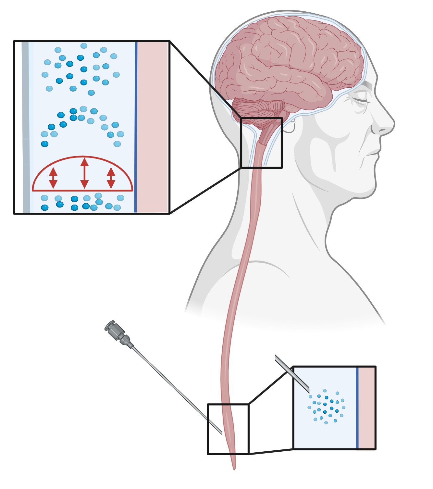

<html lang="en">
    <head>
        <meta charset="UTF-8">
        <meta name="viewport" content="width=device-width, initial-scale=1.0">
        <title>Figure 1</title>
        <style>
        @page {
            size: A4;
            margin: 1cm;
        }


        h5 {
            color: black;
            text-align: left;
            font-family: Helvetica;
            font-size: 5.5pt;
            margin-top: 20px;
        }
        h4 {
            color: black;
            text-align: left;
            font-size: 8pt;
            font-family: Helvetica;
            margin-top: 20px;
        }

        p {
            text-align: center;
            font-size: 9pt;
        }
        img {
            object-fit: contain;
        }
    </style>
    </head>
</html>



<h4 style="position:absolute;left:13px;top:11px;width:31px;height:24px;">A</h4>
<h4 style="position:absolute;left:275px;top:11px;width:31px;height:24px;">B</h4>
<h4 style="position:absolute;left:495px;top:11px;width:31px;height:24px;">C</h4>
<h4 style="position:absolute;left:18px;top:249px;width:31px;height:24px;transform-origin:19px 12px;translate:0px 0px;">D</h4>
<h4 style="position:absolute;left:195px;top:249px;width:31px;height:24px;">E</h4>
<h4 style="position:absolute;left:414px;top:249px;width:31px;height:24px;">F</h4>
<h4 style="position:absolute;left:8px;top:486px;width:31px;height:24px;">G</h4>
<h4 style="position:absolute;left:440px;top:623px;width:31px;height:24px;">I</h4>
<h4 style="position:absolute;left:440px;top:486px;width:31px;height:24px;">H</h4>
<h5 style="position:absolute;left:302px;top:15px;width:179px;height:17px;">parenchyma, CSF&nbsp; &amp; cerebral vessels</h5>
<h5 style="position:absolute;left:513px;top:15px;width:82px;height:17px;">arterial network</h5>
<h5 style="position:absolute;left:508px;top:126px;width:82px;height:17px;">venous network</h5>
<h5 style="position:absolute;left:103px;top:15px;width:99px;height:17px;">model illustration</h5>
<h5 style="position:absolute;left:35px;top:250px;width:235px;height:17px;">intrathecal injection</h5>
<h5 style="position:absolute;left:244px;top:250px;width:103px;height:17px;">tracer arrival times</h5>
<h5 style="position:absolute;left:469px;top:489px;width:235px;height:17px;">Total tracer content</h5>
<h5 style="position:absolute;left:464px;top:632px;width:235px;height:17px;">Mean tracer concentration</h5>
<h5 style="position:absolute;left:401px;top:313px;width:62px;height:17px;rotate:270deg;">arterial PVS</h5>
<h5 style="position:absolute;left:400px;top:417px;width:62px;height:17px;rotate:270deg;">venous PVS</h5>
<h5 style="position:absolute;left:465px;top:249px;width:103px;height:17px;">tracer arrival times</h5>
